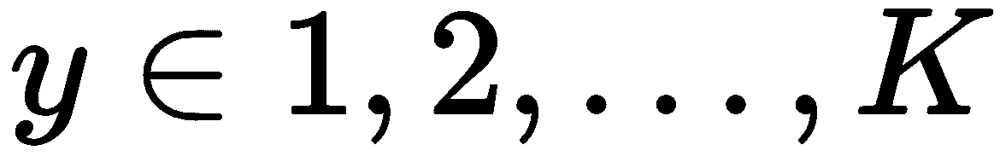
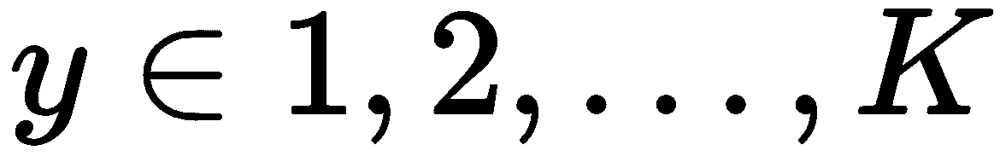
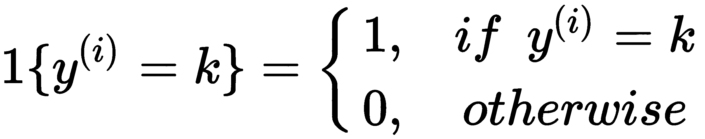
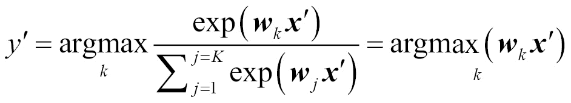
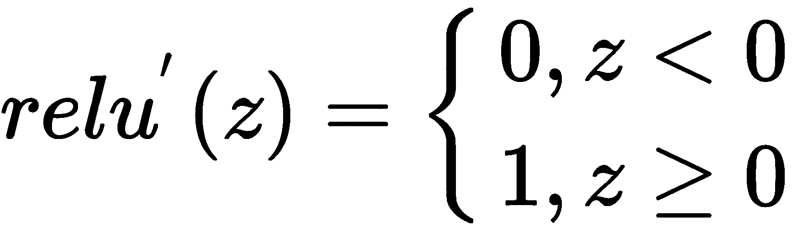

现在，我们通过深度学习的基本和核心概念，以及深度学习101项目-手写数字识别，深入研究我们的深度学习之旅。我们将从深度学习是什么开始，我们为什么需要它，以及它近年来的演变。我们还将讨论深度学习为什么脱颖而出，以及几种典型的深度学习应用。牢记重要的深度学习概念，我们从图像分类项目开始，首先对数据进行探索性分析，并使用浅层单层神经网络进行初步尝试。然后，我们继续使用更深层次的神经网络，并取得更好的结果。然而，我们认为链接更多的隐藏层不一定会提高分类性能。关键是提取更丰富的表示和更多的信息特征。还有卷积神经网络(CNN)就是要走的路！我们将展示如何使用CNN将数字识别准确率提高到近99%，CNN非常适合利用区分图像的强大而独特的功能。经过多次实验和验证，我们终于完成了这一章。
我们将详细研究这些主题:
深度学习是机器学习的一个新兴子领域。它采用人工神经网络 ( ANN )算法来处理数据，导出模式或开发抽象概念，模拟生物大脑的思维过程。而那些ann通常包含不止一个隐藏层，这就是深度学习得名的原因——用堆叠神经网络的机器学习。超越浅层神经网络(通常只有一个隐藏层)，具有正确架构和参数的深度学习模型可以更好地表示复杂的非线性关系。
下面是一个浅安的例子:
深度学习模型的一个例子:
不管听起来或看起来有多复杂，都不要感到害怕。在本书的五个项目中，我们将由浅入深地探讨深度学习。
首先，作为机器学习大家族的一部分，深度学习可以用于监督学习、半监督学习，以及无监督学习任务，甚至是强化学习任务。那么，它与传统的机器学习算法有什么区别呢？
深度学习采用非线性处理单元的多个隐藏层的堆栈。隐藏层的输入是其前一层的输出。这可以从前面示出的浅层神经网络和深层神经网络的例子中容易地观察到。
从每个隐藏层中提取特征。不同层的特征代表不同层次的抽象或模式。因此，较高级别的特征是从较低级别的特征中导出的，较低级别的特征是从先前的层中提取的。所有这些一起形成了从数据中学习的分层表示。
以猫狗图像分类为例，在传统的机器学习解决方案中，分类步骤遵循特征提取过程，该过程通常基于:
传统机器学习解决猫狗分类的工作流程如下图所示:
然而，在基于深度学习的解决方案中(例如CNN，我们将很快学习)，在整个潜在学习过程中导出分层表示，然后将最高级别的特征馈入最终的分类步骤。这些特征捕捉了猫和狗图像中重要的和可区分的细节。取决于隐藏层中的魔法:
深度学习解决方案的整个工作流程如下图所示:
深度学习消除了那些手动或显式的特征提取步骤，而是依靠训练过程来自动发现输入数据下面的有用模式。通过调整网络的布局(层数、层的隐藏单元数、激活函数等)，我们可以找到最有效的功能集。
回想一下上一节中的浅层人工神经网络和深度学习模型的示例，数据从输入层单向流向输出层。除了前馈架构，深度学习模型允许数据向任何方向前进，甚至循环回到输入层。从前一个输出返回的数据成为下一个输入数据的一部分。递归神经网络 ( RNNs )就是很好的例子。在本书的后面，我们将使用RNNs进行项目。目前，我们仍然可以从如下RNNs图中了解到循环或类似周期的架构是什么样子:
递归架构使模型适用于时间序列数据和输入序列。由于来自先前时间点的数据进入当前时间点的训练，深度学习递归模型以前馈方式有效地解决了时间序列或序列学习问题。在时间序列问题的传统机器学习解决方案中(在时序数据的机器学习:T. Dietterich的综述中阅读更多),以前滞后的滑动窗口通常被提供作为当前输入。这可能是无效的，因为需要确定滑动窗口的大小以及窗口的数量，而递归模型自己计算出时间或顺序关系。
虽然我们在这里讨论了深度学习相对于其他机器学习技术的所有优势，但我们并没有声称或声明现代深度学习优于传统机器学习。没错，这个领域没有免费的午餐，我上本书 Python机器学习举例也强调了这一点。没有一种算法可以比其他算法更有效地解决所有机器学习问题。这完全取决于具体的用例——在一些应用中，“传统的”用例更适合，或者深度学习设置没有什么区别；在某些情况下，“现代”的会产生更好的性能。
接下来，我们将看到深度学习的一些典型应用，这些应用将更好地激励我们开始深度学习项目。
计算机视觉和图像识别通常被认为是深度学习发生突破的第一个领域。手写数字识别已经成为该领域的一个Hello World，图像分类算法和技术的一个常见评估集是从国家标准与技术研究所 ( NIST )，称为 MNIST ( M 代表修改后的，这意味着数据经过预处理，以便于机器学习过程)。
MNIST的一些例子如下:
一些研究人员目前已经使用CNN在MNIST数据集上取得了最好的性能0.21%的错误率。细节可以在2013年国际机器学习会议 ( ICML )上发表的论文使用DropConnect的神经网络正则化中找到。CNN和深度神经网络也产生了其他可比较的结果，例如0.23%、0.27%和0.31%。然而，采用复杂特征工程技术的传统机器学习算法只能产生0.52%至7.6%的错误率，这是通过分别使用支持向量机 ( SVMs )和成对线性分类器实现的。
除了图像识别(如众所周知的人脸识别)，深度学习的应用还扩展到更具挑战性的任务，包括:
自然语言处理 ( NLP )是深度学习在现代解决方案中占主导地位的另一个领域。回想一下，我们描述过具有递归架构的深度学习模型适用于输入序列，如自然语言和文本。近年来，深度学习极大地帮助改善了:
图像字幕生成，也称为图像到文本，结合了计算机视觉和自然语言处理的最新突破。它利用CNN来检测和分类图像中的对象，并为这些对象分配标签。然后，它应用RNNs在一个可理解的句子中描述这些标签。以下示例摘自来自http://cs . Stanford . edu/people/kar pathy/deepimagesent/generation demo/的web演示(由斯坦福大学的Andrej Karpathy开发):
同样，声音和语音也是序列学习的一个领域，机器学习算法被应用于预测时间序列或标记序列数据。语音识别已经被深度学习极大地革新了。现在，基于深度学习的产品，如苹果的Siri、亚马逊的Alexa、谷歌Home、Skype Translator和许多其他产品正在“入侵”我们的生活，当然是以一种好的方式。除了写文本的作者，深度学习模型也可以是音乐作曲家。例如，来自米兰理工大学的Francesco Marchesani能够训练RNNs演奏肖邦的音乐。
此外，深度学习在视频的许多用例中也表现出色。它以其精确的运动检测能力为虚拟现实的发展做出了重大贡献，并为监控视频中实时行为分析的发展做出了重大贡献。来自谷歌、DeepMind和牛津的科学家甚至建立了一个名为LipNet的计算机唇语阅读器，成功率达到93%。
除了有监督和无监督的学习案例，深度学习在强化学习中被大量使用。能搬运物体、爬楼梯、在厨房操作的机器人对我们来说并不陌生。最近，谷歌的AlphaGo击败了世界精英围棋选手，得到了媒体的广泛报道。如今，每个人都期待在一两年内看到自动驾驶汽车出现在市场上。这些都得益于深度学习在强化学习方面的进步。哦，别忘了电脑是被教会玩这个游戏的，FlappyBird！
我们甚至没有提到生物信息学，药物发现，电子商务中的推荐系统，金融，特别是股票市场，保险和物联网 ( IoT )。事实上，深度学习应用的列表已经很长了，而且只会越来越长。
我希望这一部分让你对深度学习及其为我们面临的许多机器学习问题提供更好解决方案的能力感到兴奋。由于深度学习的进步，人工智能有着更光明的未来。
那么我们还在等什么呢？让我们从手写数字识别开始吧！
当然，我们从探索手写数字数据集开始。
来自http://yann.lecun.com/exdb/mnist/的MNIST数据集由60，000个样本的训练集和10，000个样本的测试集组成。如前所述，图像最初取自NIST，然后居中并调整到相同的高度和宽度(28 * 28)。
我们没有在前面的网站中处理ubyte文件、train-images-idx3-ubyte.gz和train-labels-idx1-ubyte.gz并合并它们，而是使用了一个从Kaggle竞赛数字识别器中格式化好的数据集，https://www.kaggle.com/c/digit-recognizer/。我们可以直接从https://www.kaggle.com/c/digit-recognizer/data下载训练数据集train.csv。它是网站中提供的唯一带标签的数据集，我们将使用它来训练分类模型、评估模型和进行预测。现在让我们开始吧:
> data <- read.csv ("train.csv")
> dim(data)
[1] 42000 785
我们有42，000个可用的标记样本，每个样本有784个特征，这意味着每个数字图像有784 (28 * 28)个像素。看一下标签和前6个数据样本的前5个特征(像素):
> head(data[1:6])
label pixel0 pixel1 pixel2 pixel3 pixel4
1 1 0 0 0 0 0
2 0 0 0 0 0 0
3 1 0 0 0 0 0
4 4 0 0 0 0 0
5 0 0 0 0 0 0
6 0 0 0 0 0 0
从0到9的目标标签表示10位数字:
> unique(unlist(data[1]))
[1] 1 0 4 7 3 5 8 9 2 6
像素变量范围从0到255，代表像素的亮度，例如0代表黑色，255代表白色:
> min(data[2:785])
[1] 0
> max(data[2:785])
[1] 255
现在我们来看两个样本，首先，第四张图片:
> sample_4 <- matrix(as.numeric(data[4,-1]), nrow = 28, byrow = TRUE)
> image(sample_4, col = grey.colors(255))
其中我们将长度为784的特征向量整形为28 * 28的矩阵。
二、第七幅图像:
> sample_7 <- matrix(as.numeric(data[7,-1]), nrow = 28, byrow = TRUE)
> image(sample_7, col = grey.colors(255))
结果如下:
我们注意到图像向左旋转了90度。为了更好地查看图像，需要顺时针旋转90度。我们只需要在图像矩阵的每一列中保留元素:
> # Rotate the matrix by reversing elements in each column
> rotate <- function(x) t(apply(x, 2, rev))
现在想象旋转后的图像:
> image(rotate(sample_4), col = grey.colors(255))
> image(rotate(sample_7), col = grey.colors(255))
在查看了背后的数据和图像之后，我们对标签和特征做了更多的探索性分析。首先，因为这是一个分类问题，我们检查数据中的类是平衡的还是不平衡的，这是一个好的做法。但在此之前，我们应该将标签从整数转换为因子:
> # Transform target variable "label" from integer to factor, in order to perform classification
> is.factor(data$label)
[1] FALSE
> data$label <- as.factor(data$label)
> is.factor(data$label)
[1] TRUE
现在，我们可以用计数来总结标签分布:
> summary(data$label)
0 1 2 3 4 5 6 7 8 9
4132 4684 4177 4351 4072 3795 4137 4401 4063 4188
或结合比例(%):
> proportion <- prop.table(table(data$label)) * 100
> cbind(count=table(data$label), proportion=proportion)
count proportion
0 4132 9.838095
1 4684 11.152381
2 4177 9.945238
3 4351 10.359524
4 4072 9.695238
5 3795 9.035714
6 4137 9.850000
7 4401 10.478571
8 4063 9.673810
9 4188 9.971429
班级平衡。
现在，我们探索特征的分布，像素。例如，我们从每个图像的中心2*2块(即pixel376、pixel377、pixel404和pixel405))中取出4个像素，并显示9个数字中每个数字的直方图:
> central_block <- c("pixel376", "pixel377", "pixel404", "pixel405")
> par(mfrow=c(2, 2))
> for(i in 1:9) {
+ hist(c(as.matrix(data[data$label==i, central_block])),
+ main=sprintf("Histogram for digit %d", i),
+ xlab="Pixel value")
+ }
数字1至4的像素亮度直方图分别显示如下:
数字5至9的直方图:
数字9的含义:
中心像素的亮度在9位数之间有不同的分布。例如，大多数中心像素是亮的，因为数字8通常以笔画穿过中心的方式书写；而数字7不是这样写的，因此大部分中心像素是暗的。从其他位置获取的像素也可以清楚地分布在不同的数字中。
我们刚刚进行的探索性分析有助于我们建立基于像素的分类模型。
我们从可能是最基本的分类器逻辑回归开始，具体来说是多项逻辑回归，因为它是多类情况。它是由权重矩阵 W (也称为系数矩阵)和偏差(也称为截距)向量 b 参数化的概率线性分类器。并且它将输入向量 x 映射到一组概率 P(y=1)，P(y=2)，。。。，P(y-K) 为 K 可能的类。
两个可能类别的多项式逻辑回归可以用图形表示如下:
假设 x 是 n 维，那么权重矩阵 W 的大小为 n 乘以 K ，其中每列WKT26】表示与类 k 相关联的系数；类似地，偏置向量 b 的长度为 K ，每个元素bKT36】用作类 k 的偏置。为简单起见，偏差 b 可以被视为权重矩阵 W 中的附加行。因此 x 成为类别 k 的概率可以数学表达为:
其中 softmax() 表示softmax函数，这就是多项式逻辑回归通常被称为softmax回归的原因。
给定一组训练样本 ，其中，通过最小化成本(也称为对数损失)获得最优模型 w ，其定义为:
，其中，通过最小化成本(也称为对数损失)获得最优模型 w ，其定义为:
其中
像往常一样，我们求助于梯度下降，一种迭代优化算法，来求解最优的 w 。在每次迭代中， w 移动一个与目标函数在当前点的负导数δw成比例的步长。即w:= w–ƞδw，其中 ƞ 为学习率。δw的每列δwkT21可以计算为:
训练有素的模型，最优的 w 将用于通过以下方式对新样本x’进行分类:

有了我们刚刚回顾的多项式逻辑回归的机制，我们就可以将它作为数字分类项目的第一个解决方案。
我们首先使用caret包将数据集分成两个子集，分别用于训练和测试。
安装并导入包caret:
> if (!require("caret"))
+ install.packages("caret")
> library (caret)
Loading required package: lattice
Loading required package: ggplot2
我们首先使用createDataPartition函数将数据分成两部分，75%用于训练，25%用于测试:
> set.seed(42)
> train_perc = 0.75
> train_index <- createDataPartition(data$label, p=train_perc, list=FALSE) > data_train <- data[train_index,]
> data_test <- data[-train_index,]
为了确保实验的可重复性，从随机数生成器中选择一个种子总是一个好的做法。
然后，我们使用nnet包实现多项式逻辑回归模型。该软件包包含前馈单层神经网络以及多项式逻辑回归模型的功能。更多细节可以在https://cran.r-project.org/web/packages/nnet/nnet.pdf:中找到
> library(nnet)
> # Multinomial logistic regression
> model_lr <- multinom(label ~ ., data=data_train, MaxNWts=10000,
decay=5e-3, maxit=100)
# weights: 7860 (7065 variable)
initial value 72538.338185
iter 10 value 17046.804658
iter 20 value 11166.225504
iter 30 value 9514.340319
iter 40 value 8819.724147
iter 50 value 8405.001712
iter 60 value 8164.997939
iter 70 value 7983.427139
iter 80 value 7897.005940
iter 90 value 7831.663204
iter 100 value 7730.047242
final value 7730.047242
stopped after 100 iterations
我们在训练子集上拟合多项式逻辑回归模型，其参数包括:
每10次迭代就打印一次误差值，并且误差值是递减的。当达到最大迭代次数时，模型收敛。然后，我们使用训练好的模型来预测测试样本的类别:
> prediction_lr <- predict(model_lr, data_test, type = "class")
看一下前五个样本的预测结果:
> prediction_lr[1:5]
[1] 1 0 7 5 8
Levels: 0 1 2 3 4 5 6 7 8 9
它们真正的价值是:
> data_test$label[1:5]
[1] 1 0 7 5 8
Levels: 0 1 2 3 4 5 6 7 8 9
我们还可以通过下式获得混淆矩阵:
> cm_lr = table(data_test$label, prediction_lr)
> cm_lr
以及分类精度:
> accuracy_lr = mean(prediction_lr == data_test$label)
> accuracy_lr
[1] 0.8935886
第一次尝试89.4%。还不错！我们肯定可以通过调整模型参数做得更好，比如decay和maxit。但是我们关注的是更高级的模型，它能更好地学习底层模式。因此，我们继续第二个解决方案，具有单一隐藏层的前馈神经网络。
基本上，逻辑回归是一个无隐含层的前馈神经网络，其中输出层与输入层直接相连。换句话说，逻辑回归是将输入映射到输出层的单个神经元。理论上，在输入层和输出层之间有一个附加隐藏层的神经网络应该能够学习更多关于其下面的关系。
两个可能类别的单层神经网络可以用图形表示如下:
假设 x 是 n 维，并且在隐藏层中有 H 个隐藏单元，那么连接输入层和隐藏层的权重矩阵 w (1) 的大小为 n 乘 H ，每列wH(1)代表与相关联的系数因此，第h-第个隐藏单元 h (2) 的输出(也称为激活)在数学上可以表示为:
例如，对于第一个、第二个和最后一个隐藏单元的输出:

其中 f (z)是激活函数。简单网络中激活函数的典型选择包括逻辑函数(通常称为sigmoid函数)和tanh函数(可视为逻辑函数的缩放版本):

这两个函数的曲线图如下:
现在，我们将在单层网络中使用逻辑功能。
对于有 K 个可能的类的情况，连接隐藏层和输出层的权重矩阵 w (2) 的大小为 H 乘 K. 每列wK(2)表示与类 k 相关联的系数。输出层的输入是隐藏层的输出a(2)= {a1(2)，a2(2)，...、aI(2)}，则 x 为类 k 的概率在数学上可以表示为(为一致起见，我们将其表示为ak(3)【T51):
类似地，给定 m个训练样本，为了训练神经网络，我们使用梯度下降学习所有权重w= {w(1)，w}，目标是最小化均方误差成本 J(w) 。
梯度δw的计算可以通过反向传播算法来实现。反向传播算法的思想如下，我们首先遍历网络并计算隐藏层和输出层的所有输出；然后从最后一层向后移动，我们计算每个节点在最终输出中对误差的贡献，并将其传播回之前的层。在我们的单层网络中，具体步骤是:
我们通过采取这些步骤反复更新所有权重，直到成本函数收敛。
在简单回顾了单层网络之后，我们可以将它作为第二个解决方案应用到我们的数字分类项目中。
同样，我们使用nnet包来实现我们的单层网络:
> model_nn <- nnet(label ~ ., data=data_train, size=50, maxit=300, MaxNWts=100000, decay=1e-4)
# weights: 39760
initial value 108597.598656
iter 10 value 27708.286001
iter 20 value 16027.005297
iter 30 value 14058.141050
iter 40 value 12615.442747
iter 50 value 11793.700937
iter 60 value 11026.672273
iter 70 value 10654.855058
iter 80 value 10193.580947
iter 90 value 9854.836168
iter 100 value 9544.973159
iter 110 value 9307.192737
iter 120 value 9043.028253
iter 130 value 8845.069307
iter 140 value 8686.707561
iter 150 value 8525.104362
iter 160 value 8281.609223
iter 170 value 8140.051273
iter 180 value 7998.721024
iter 190 value 7854.388240
iter 200 value 7712.459027
iter 210 value 7636.945553
iter 220 value 7557.675909
iter 230 value 7449.854506
iter 240 value 7355.021651
iter 250 value 7259.186906
iter 260 value 7192.798089
iter 270 value 7055.027833
iter 280 value 6957.926522
iter 290 value 6866.641511
iter 300 value 6778.342997
final value 6778.342997
stopped after 300 iterations
我们用以下参数拟合模型:
我们将训练好的网络模型应用于测试集:
> prediction_nn <- predict(model_nn, data_test, type = "class")
> cm_nn = table(data_test$label, prediction_nn)
> cm_nn
prediction_nn
0 1 2 3 4 5 6 7 8 9
0 987 0 3 3 2 11 10 7 5 5
1 0 1134 9 6 0 2 0 5 11 4
2 14 9 918 31 11 11 7 15 22 6
3 3 1 17 966 0 41 3 14 24 18
4 4 3 8 2 929 4 11 11 5 41
5 12 2 6 17 5 851 15 9 26 5
6 10 1 14 0 9 14 970 0 15 1
7 4 4 23 6 5 2 0 1010 7 39
8 5 15 9 18 5 31 9 4 912 7
9 11 2 1 20 52 4 0 36 8 913
> accuracy_nn = mean(prediction_nn == data_test$label)
> accuracy_nn
[1] 0.9135944
比我们第一次尝试要好！我们可以用深度学习模型做得更好吗，直观地说，更多的隐藏层？当然可以。
我们刚刚用单层神经网络模型实现了91.3%的准确率。理论上，我们可以得到一个更好的一个以上的隐藏层。作为示例，我们提供了具有两个隐藏层的深度神经网络模型的解决方案:
前馈深度神经网络中的权重优化也通过反向传播算法来实现，这与单层网络相同。然而，层数越多，计算复杂度越高，并且模型收敛越慢。加速权重优化的一种方式是使用计算效率更高的激活函数。近几年最流行的是整流线性单元 ( ReLU ):
ReLU函数的图形如下:
由于其导数的特性，使用ReLU激活函数相对于sigmoid有两个主要优势:
我们在前面章节中使用的nnet包(到目前为止)只能模拟单层网络。在本章中，我们使用MXNet包来实现具有多个隐藏层的深度神经网络。MXNet(https://mxnet.incubator.apache.org/)是一个深度学习框架，支持编程语言包括R、Scala、Python、Julia、C++和Perl。它是由DMLC(http://dmlc.ml/)团队开发的，该团队是一群在开源机器学习项目上合作的专家。它是可移植的，可以扩展到多个CPU、多个GPU和多台机器，例如，在云中。最重要的是，它允许我们灵活高效地构建最先进的深度学习模型，包括深度神经网络、CNN和RNNs。
先装MXNet吧:
> cran <- getOption("repos")
> cran["dmlc"] <- "https://s3-us-west-2.amazonaws.com/apache-mxnet/R/CRAN/"
> options(repos = cran)
> if (!require("mxnet"))
install.packages("mxnet")
现在我们可以导入MXNet并将数据转换成MXNet中神经网络模型首选的格式:
> require(mxnet)
> data_train <- data.matrix(data_train)
> data_train.x <- data_train[,-1]
> data_train.x <- t(data_train.x/255)
> data_train.y <- data_train[,1]
注意我们通过除以最大可能值255，将输入特征缩放到从0到1的范围。否则，深度神经网络可能偏向某些特征，并且这种偏斜将在层上累积。
既然训练数据集已经准备好了，我们就可以通过如下定义其架构来开始构建网络:
> data <- mx.symbol.Variable("data")
> fc1 <- mx.symbol.FullyConnected(data, name="fc1", num_hidden=128)
> act1 <- mx.symbol.Activation(fc1, name="relu1", act_type="relu")
> fc2 <- mx.symbol.FullyConnected(act1, name="fc2", num_hidden=64)
> act2 <- mx.symbol.Activation(fc2, name="relu2", act_type="relu")
> fc3 <- mx.symbol.FullyConnected(act2, name="fc3", num_hidden=10)
> softmax <- mx.symbol.SoftmaxOutput(fc3, name="sm")
在MXNet的符号API中，我们用数据类型符号来表示网络。我们从输入层数据开始，输入数据，接着是第一个隐藏层fc1，有128个节点，完全连接输入层。然后，我们将ReLU函数附加到fc1并输出该层的激活act1。同样，我们链另一个隐藏层fc2，这次64个节点，输出ReLU-based activates act2。最后，我们用一个softmax函数结束输出层，生成对应于10个类别的10个概率。整体结构看起来像这样:
造好骨骼之后，就是训练模型的时候了。我们可以选择我们的计算设备、CPU和/或GPU，下面是一个CPU示例:
> devices <- mx.cpu()
在训练之前，不要忘记设置随机种子，以使建模过程可重复:
> mx.set.seed(42)
> model_dnn <- mx.model.FeedForward.create(softmax, X=data_train.x,
y=data_train.y, ctx=devices, num.round=30, array.batch.size=100,
learning.rate=0.01, momentum=0.9, eval.metric=mx.metric.accuracy,
initializer=mx.init.uniform(0.1),
epoch.end.callback=mx.callback.log.train.metric(100))
Start training with 1 devices
[1] Train-accuracy=0.724793650793651
[2] Train-accuracy=0.904715189873417
[3] Train-accuracy=0.925537974683544
[4] Train-accuracy=0.939936708860759
[5] Train-accuracy=0.950379746835443
[6] Train-accuracy=0.95873417721519
[7] Train-accuracy=0.96509493670886
[8] Train-accuracy=0.969905063291139
[9] Train-accuracy=0.974303797468355
[10] Train-accuracy=0.977784810126584
[11] Train-accuracy=0.980696202531648
[12] Train-accuracy=0.983164556962027
[13] Train-accuracy=0.985284810126584
[14] Train-accuracy=0.987405063291141
[15] Train-accuracy=0.988924050632913
[16] Train-accuracy=0.990727848101267
[17] Train-accuracy=0.992088607594938
[18] Train-accuracy=0.993227848101268
[19] Train-accuracy=0.994398734177217
[20] Train-accuracy=0.995284810126584
[21] Train-accuracy=0.995854430379748
[22] Train-accuracy=0.996835443037975
[23] Train-accuracy=0.997183544303798
[24] Train-accuracy=0.997848101265823
[25] Train-accuracy=0.998164556962026
[26] Train-accuracy=0.998575949367089
[27] Train-accuracy=0.998924050632912
[28] Train-accuracy=0.999177215189874
[29] Train-accuracy=0.999367088607595
[30] Train-accuracy=0.999525316455696
我们只是用超参数来拟合模型，包括:
其中左边和右边的 v 分别是前一个和当前速度，γ ∈ (0，1)是动量因子，确定有多少前一个速度被合并到当前速度中。
模型训练完成后，让我们看看它在测试集上的表现如何。首先，记住对测试数据集进行相同的预处理:
> data_test.x <- data_test[,-1]
> data_test.x <- t(data_test.x/255)
然后，预测测试用例并评估性能:
> prob_dnn <- predict(model_dnn, data_test.x)
> prediction_dnn <- max.col(t(prob_dnn)) - 1
> cm_dnn = table(data_test$label, prediction_dnn) > cm_dnn prediction_dnn 0 1 2 3 4 5 6 7 8 9 0 1041 0 2 0 0 1 3 0 8 1 1 0 1157 3 1 1 0 1 3 1 0 2 2 1 993 3 3 1 2 13 5 2 3 1 3 14 1033 1 13 0 5 14 6 4 0 2 1 0 991 0 4 4 1 12 5 4 2 3 12 3 892 4 3 6 8 6 10 0 1 0 3 4 988 0 4 0 7 0 5 9 1 2 0 0 1116 2 1 8 4 8 3 5 0 8 3 2 1020 12 9 1 1 0 4 13 3 0 16 2 957 > accuracy_dnn = mean(prediction_dnn == data_test$label) > accuracy_dnn [1] 0.9704706
通过增加一个隐藏层，准确率从91.4%提高到97.0%！由于深层神经网络中的每个隐藏层都提供了特定级别的数据表示，我们是否可以简单地得出结论:隐藏层越多(例如100、1，000、10，000...)，发现的底层模式越多，分类精度越好？如果我们有充足的资源和时间来实现计算，并确保在如此复杂的网络中不会发生过度拟合，这可能是真的。除了简单地链接更多的隐藏层之外，有没有什么方法可以让我们提取更丰富、更有信息量的表示，同时又不会过度扩大我们的网络？答案是CNN。
虽然常规隐藏层(我们也称之为全连接层)在某些级别上完成了获取表示的工作，但是这些表示可能能够帮助我们区分不同类别的图像。我们需要提取更丰富和可区分的表示，例如，使“9”成为“9”，使“4”成为“4”，或者使猫成为猫，狗成为狗。我们求助于CNN作为多层神经网络的变体，这是由人类视觉皮层产生的生物学灵感。基本上，CNN从以下两个神经科学发现中获得灵感:
类似地，CNN通过首先导出低级表示、局部边缘和曲线来对图像进行分类，然后通过一系列低级表示来合成高级表示、整体形状和轮廓。CNN非常适合利用强大而独特的特征来区分图像。
一般来说，CNN接收一个图像，通过一系列卷积层、非线性层、池层和全连接层，最后输出每个可能类别的概率。现在，我们将详细地单独查看每种类型的层。
卷积层是CNN的第一层。它通过对输入应用卷积运算来模拟神经元细胞对感受野的反应方式。具体来说，它计算卷积层的权重与输入层中它们所连接的小区域之间的点积。这个小区域是感受野，权重可以看作是过滤器上的值。当过滤器从输入层的开始滑动到结束时，计算权重和当前感受野之间的点积。在对所有子区域进行卷积之后，获得一个新的层，称为特征图。看一下下面的例子:
层 m 有五个节点，过滤器有三个单元wT4】1、wT8】2、wT12】3。我们计算过滤器和层 m 中的前三个节点之间的点积，并获得特征图中的第一个节点；然后，我们计算过滤器和中间三个节点之间的点积，并生成第二个节点；最后，我们从层 m 中的最后三个节点得到第三个节点。
帮助我们更好地理解卷积层如何处理图像的另一个例子如下:
一个3×3的过滤器在一个5×5的图像周围从左上的子区域滑动到右下。对于每个子区域，用滤波器计算点积。结果产生了3×3的特征图。
卷积层实际上用于提取特征，例如边缘和曲线。如果相应的感受野包含由过滤器指定的边缘或曲线，则特征图中的输出像素将具有高值。例如，在前面的例子中，过滤器描绘了反斜杠形状的对角线边缘，蓝色矩形中的感受野包含类似的曲线，因此，产生了最高强度3(1 * 1+1 * 1+1 * 1 = 3)；然而，左下角的感受野不包含这样的形状，这导致值为1的像素。卷积层充当曲线检测器，模拟我们视觉细胞的工作方式。
请记住，在前面的案例中，我们仅应用了一个过滤器并生成了一个特征图，该图显示了输入图像中的形状与过滤器中表示的曲线的相似程度。为了实现更丰富的数据表示，我们可以使用更多的过滤器，如水平、垂直曲线、30度或直角形状，以便由特征图组成的隐藏层可以检测更多的模式。此外，堆叠许多卷积层可以产生更高级别的表示，例如整体形状和轮廓。为了确保捕捉到强的空间局部模式，层中的每个滤光器仅响应于相应的感受野。链接更多的层导致更大的感受域，从而捕捉更多的全局模式。
显然，在每个卷积层之后，我们通常会应用一个非线性层(也称为激活层，以便引入非线性。这是因为在卷积层中只进行线性运算(乘法和加法)。只有线性隐藏层的神经网络的行为就像单层感知器一样，不管有多少层。同样，ReLu是深度神经网络中非线性层的最受欢迎的候选者。
通常，在通过一对或多对卷积层和非线性层获得特征后，我们可以使用输出进行分类，例如在我们的多类情况下应用softmax层。让我们做一些数学计算，假设我们在第一卷积层中应用20个5*5滤波器，那么这一层的输出大小将是20 *(28-5+1)*(28-5+1)= 20 * 24 * 24 = 11520，这意味着作为下一层输入的特征数量从784变为11520；然后，我们在第二个卷积层中应用50个5*5滤波器，输出的大小增长到50 * 20 * (24 - 5 + 1) * (24 - 5 + 1) = 400，000，与我们的初始大小784相比，这是高维的。我们可以看到，在用于分类的softmax层之前，维度随着每个卷积层而急剧增加。这很容易导致过拟合，更不用说在相应的非线性层中训练大量的权重。
为了解决维度增长问题，我们通常在一对卷积和非线性层之后采用一个池层(也称为下采样层)。顾名思义，它按子区域聚集特征的统计数据，以生成低得多的维度特征。典型的池化方法包括最大池化和平均池化，它们分别在所有不重叠的子区域上取最大值和平均值。例如，我们将2*2最大池过滤器应用于4*4特征地图，并输出2*2过滤器:
除了减少低维输出的过度拟合，汇集层聚合区域统计数据还有另一个优势—平移不变性。这意味着，如果输入图像进行少量平移，输出不会改变。例如，假设我们将输入图像向左或向右、向上或向下移动几个像素，只要最高像素在子区域中保持不变，max pooling层的输出仍然不变。换句话说，对于合并图层，预测变得对位置不太敏感。
将这三种类型的卷积相关层以及全连接层放在一起，我们可以将CNN模型构建如下:
它从第一卷积层、ReLu非线性层和池层开始。这里，我们使用20个5*5卷积滤波器和一个2*2最大池滤波器:
> # first convolution
> conv1 <- mx.symbol.Convolution(data=data, kernel=c(5,5),
num_filter=20)
> act1 <- mx.symbol.Activation(data=conv1, act_type="relu")
> pool1 <- mx.symbol.Pooling(data=act1, pool_type="max",
+ kernel=c(2,2), stride=c(2,2))
接着是第二卷积、ReLu非线性和池层，其中使用了50个5*5卷积滤波器和一个2*2最大池滤波器:
> # second convolution
> conv2 <- mx.symbol.Convolution(data=pool1, kernel=c(5,5),
num_filter=50)
> act2 <- mx.symbol.Activation(data=conv2, act_type="relu")
> pool2 <- mx.symbol.Pooling(data=act2, pool_type="max",
+ kernel=c(2,2), stride=c(2,2))
现在，我们通过检测边缘、曲线和形状来提取输入图像的丰富表示，我们继续处理完全连接的层。但在此之前，我们需要展平来自先前卷积图层的结果特征图:
> flatten <- mx.symbol.Flatten(data=pool2)
在完全连接部分，我们应用两个ReLu隐藏层，分别为500和10个单元:
> # first fully connected layer
> fc1 <- mx.symbol.FullyConnected(data=flatten, num_hidden=500)
> act3 <- mx.symbol.Activation(data=fc1, act_type="relu")
> # second fully connected layer
> fc2 <- mx.symbol.FullyConnected(data=act3, num_hidden=10)
最后，softmax层产生10个类的输出:
> # softmax output
> softmax <- mx.symbol.SoftmaxOutput(data=fc2, name="sm")
现在，骨头已经造好了。是时候设置随机种子并开始训练模型了:
我们需要首先按照MXNet中卷积层的要求将矩阵data_train.x整形为一个数组:
> train.array <- data_train.x
> dim(train.array) <- c(28, 28, 1, ncol(data_train.x))
> mx.set.seed(42)
> model_cnn <- mx.model.FeedForward.create(softmax, X=train.array,
y=data_train.y, ctx=devices, num.round=30,
array.batch.size=100, learning.rate=0.05,
momentum=0.9, wd=0.00001,
eval.metric=mx.metric.accuracy,
epoch.end.callback=mx.callback.log.train.metric(100))
Start training with 1 devices
[1] Train-accuracy=0.306984126984127
[2] Train-accuracy=0.961898734177216
[3] Train-accuracy=0.981139240506331
[4] Train-accuracy=0.987151898734179
[5] Train-accuracy=0.990348101265825
[6] Train-accuracy=0.992689873417723
[7] Train-accuracy=0.994493670886077
[8] Train-accuracy=0.995822784810128
[9] Train-accuracy=0.995601265822786
[10] Train-accuracy=0.997246835443039
[11] Train-accuracy=0.997341772151899
[12] Train-accuracy=0.998006329113925
[13] Train-accuracy=0.997626582278482
[14] Train-accuracy=0.998069620253165
[15] Train-accuracy=0.998765822784811
[16] Train-accuracy=0.998449367088608
[17] Train-accuracy=0.998765822784811
[18] Train-accuracy=0.998955696202532
[19] Train-accuracy=0.999746835443038
[20] Train-accuracy=0.999841772151899
[21] Train-accuracy=0.999905063291139
[22] Train-accuracy=1
[23] Train-accuracy=1
[24] Train-accuracy=1
[25] Train-accuracy=1
[26] Train-accuracy=1
[27] Train-accuracy=1
[28] Train-accuracy=1
[29] Train-accuracy=1
[30] Train-accuracy=1
除了我们在之前的深度神经网络模型中使用的那些超参数之外，我们使用L2正则化权重衰减wd = 0.00001来拟合CNN模型，这为大权重增加了惩罚，以避免过度拟合。
同样，CNN模型的训练与其他网络没有什么不同。通过反向传播算法获得最佳权重。
模型训练完成后，让我们看看它在测试集上的表现如何。首先，记住对测试数据集进行相同的预处理:
> test.array <- data_test.x
> dim(test.array) <- c(28, 28, 1, ncol(data_test.x))
预测测试用例并评估性能:
> prob_cnn <- predict(model_cnn, test.array)
> prediction_cnn <- max.col(t(prob_cnn)) - 1
> cm_cnn = table(data_test$label, prediction_cnn)
> cm_cnn
prediction_cnn
0 1 2 3 4 5 6 7 8 9
0 1051 0 1 0 0 1 1 0 2 0
1 0 1161 0 0 0 1 1 3 1 0
2 0 0 1014 4 0 0 0 7 0 0
3 0 0 2 1075 0 6 0 2 3 2
4 0 0 0 0 1000 0 4 2 2 7
5 1 0 0 4 0 923 3 0 3 3
6 3 0 0 0 0 0 1006 0 1 0
7 0 1 2 0 3 0 0 1129 1 0
8 3 3 1 1 2 5 1 0 1043 6
9 2 0 2 0 3 3 1 2 0 984
> accuracy_cnn = mean(prediction_cnn == data_test$label)
> accuracy_cnn
[1] 0.9893313
我们的CNN模型进一步将准确率提高到接近99%！
我们还可以通过以下方式查看网络结构:
> graph.viz(model_cnn$symbol)
让我们再做一些检查，以确保一切顺利。我们从学习曲线开始，例如模型在训练集和测试集上在训练迭代次数上的分类性能。一般来说，绘制学习曲线是一个很好的做法，我们可以在曲线上直观地看到是否出现过拟合或欠拟合问题:
> data_test.y <- data_test[,1]
> logger <- mx.metric.logger$new()
> model_cnn <- mx.model.FeedForward.create(softmax, X=train.array,
y=data_train.y,eval.data=list(data=test.array,
label=data_test.y), ctx=devices, num.round=30,
array.batch.size=100, learning.rate=0.05,
momentum=0.9, wd=0.00001,eval.metric=
mx.metric.accuracy, epoch.end.callback =
mx.callback.log.train.metric(1, logger))
Start training with 1 devices
[1] Train-accuracy=0.279936507936508
[1] Validation-accuracy=0.912857142857143
[2] Train-accuracy=0.959462025316456
[2] Validation-accuracy=0.973523809523809
[3] Train-accuracy=0.979841772151899
[3] Validation-accuracy=0.980666666666666
[4] Train-accuracy=0.986677215189875
[4] Validation-accuracy=0.983428571428571
[5] Train-accuracy=0.990822784810129
[5] Validation-accuracy=0.981809523809523
[6] Train-accuracy=0.992626582278482
[6] Validation-accuracy=0.983904761904761
[7] Train-accuracy=0.993322784810128
[7] Validation-accuracy=0.986
[8] Train-accuracy=0.995474683544305
[8] Validation-accuracy=0.987619047619047
[9] Train-accuracy=0.996487341772153
[9] Validation-accuracy=0.983904761904762
[10] Train-accuracy=0.995949367088608
[10] Validation-accuracy=0.984761904761904
[11] Train-accuracy=0.997310126582279
[11] Validation-accuracy=0.985142857142856
[12] Train-accuracy=0.997658227848102
[12] Validation-accuracy=0.986857142857142
[13] Train-accuracy=0.997848101265824
[13] Validation-accuracy=0.984095238095238
[14] Train-accuracy=0.998006329113924
[14] Validation-accuracy=0.985238095238094
[15] Train-accuracy=0.998607594936709
[15] Validation-accuracy=0.987619047619047
[16] Train-accuracy=0.99863924050633
[16] Validation-accuracy=0.987428571428571
[17] Train-accuracy=0.998987341772152
[17] Validation-accuracy=0.985142857142857
[18] Train-accuracy=0.998765822784811
[18] Validation-accuracy=0.986285714285713
[19] Train-accuracy=0.999240506329114
[19] Validation-accuracy=0.988761904761905
[20] Train-accuracy=0.999335443037975
[20] Validation-accuracy=0.98847619047619
[21] Train-accuracy=0.999841772151899
[21] Validation-accuracy=0.987809523809523
[22] Train-accuracy=0.99993670886076
[22] Validation-accuracy=0.990095238095237
[23] Train-accuracy=1
[23] Validation-accuracy=0.989999999999999
[24] Train-accuracy=1
[24] Validation-accuracy=0.989999999999999
[25] Train-accuracy=1
[25] Validation-accuracy=0.990190476190476
[26] Train-accuracy=1
[26] Validation-accuracy=0.990190476190476
[27] Train-accuracy=1
[27] Validation-accuracy=0.990095238095237
[28] Train-accuracy=1
[28] Validation-accuracy=0.990095238095237
[29] Train-accuracy=1
[29] Validation-accuracy=0.990095238095237
[30] Train-accuracy=1
[30] Validation-accuracy=0.990190476190475
我们可以在每轮训练后获得训练集上的表现:
> logger$train
[1] 0.2799365 0.9594620 0.9798418 0.9866772 0.9908228 0.9926266 0.9933228 0.9954747 0.9964873 0.9959494 0.9973101
[12] 0.9976582 0.9978481 0.9980063 0.9986076 0.9986392 0.9989873 0.9987658 0.9992405 0.9993354 0.9998418 0.9999367
[23] 1.0000000 1.0000000 1.0000000 1.0000000 1.0000000 1.0000000 1.0000000 1.0000000
以及每轮训练后在测试集上的表现:
> logger$eval
[1] 0.9128571 0.9735238 0.9806667 0.9834286 0.9818095 0.9839048 0.9860000 0.9876190 0.9839048 0.9847619 0.9851429
[12] 0.9868571 0.9840952 0.9852381 0.9876190 0.9874286 0.9851429 0.9862857 0.9887619 0.9884762 0.9878095 0.9900952
[23] 0.9900000 0.9900000 0.9901905 0.9901905 0.9900952 0.9900952 0.9900952 0.9901905
学习曲线可以通过以下代码可视化:
> plot(logger$train,type="l",col="red", ann=FALSE)
> lines(logger$eval,type="l", col="blue")
> title(main="Learning curve")
> title(xlab="Iterations")
> title(ylab="Accuary")
> legend(20, 0.5, c("training","testing"), cex=0.8,
col=c("red","blue"), pch=21:22, lty=1:2);
我们会得到:
学习曲线表明过拟合或欠拟合的可能性很小。
既然模型工作得很好，为什么我们不把训练好的模型的卷积层的输出可视化，这样我们可以更好地了解CNN。让我们以测试集中的前两个样本为例。他们是1和0:
> par(mfrow=c(1,2))
> test_1 <- matrix(as.numeric(data_test[1,-1]), nrow = 28,
byrow = TRUE)
> image(rotate(test_1), col = grey.colors(255))
> test_2 <- matrix(as.numeric(data_test[2,-1]), nrow = 28,
byrow = TRUE)
> image(rotate(test_2), col = grey.colors(255))
作为参考，它们显示为:
为了可视化卷积层的激活，我们首先通过将所有具有激活的层分组来创建一个执行器(可以粗略地视为我们训练的CNN模型的副本):
> layerss_for_viz <- mx.symbol.Group(mx.symbol.Group(c(conv1, act1, pool1, conv2, act2, pool2, fc1, fc2)))
> executor <- mx.simple.bind(symbol=layerss_for_viz,
data=dim(test.array), ctx=mx.cpu())
现在，用训练模型中的权重更新执行器中的权重:
> mx.exec.update.arg.arrays(executor, model_cnn$arg.params, match.name=TRUE)
> mx.exec.update.aux.arrays(executor, model_cnn$aux.params,
match.name=TRUE)
并通过前馈传递将执行器应用于测试集:
> mx.exec.update.arg.arrays(executor,
list(data=mx.nd.array(test.array)), match.name=TRUE)
> mx.exec.forward(executor, is.train=FALSE)
我们可以看到executor中记录的层的名称，因为我们将通过名称提取层的激活(注意名称可以不同，我们应该使用相应的名称):
> names(executor$ref.outputs)
[1] "convolution10_output" "activation15_output"
"pooling10_output" "convolution11_output"
[5] "activation16_output" "pooling11_output"
"fullyconnected10_output" "fullyconnected11_output"
现在，我们可以看到第一个、第二个卷积层和ReLu层以及第一个池层的激活。
让我们从第一个卷积层中的前16个滤波器的ReLu激活开始，在我们的例子中称为activation15_output(同样，名称可能不同)。对于第一个示例(a "1")，我们运行以下脚本:
> par(mfrow=c(4,4), mar=c(0.1,0.1,0.1,0.1))
> for (i in 1:16) {
+ outputData <- as.array
(executor$ref.outputs$activation15_output)[,,i,1]
+ image(outputData, xaxt='n', yaxt='n',
col=grey.colors(255)
+ )
+ }
同样，对于第二个样本(a "0")，我们运行:
> par(mfrow=c(4,4), mar=c(0.1,0.1,0.1,0.1))
> for (i in 1:16) {
+ outputData <- as.array
(executor$ref.outputs$activation15_output)[,,i,2]
+ image(outputData, xaxt='n', yaxt='n',
col=grey.colors(255)
+ )
+ }
我们分别绘制了1(左)和0(右)输入图像的第一卷积层的激活:
我们可以观察到，每个特征图都有效地提取了手指的边缘、曲线和走向。
我们继续讨论名为pooling10_output的第一个池层的相应输出:
> par(mfrow=c(4,4), mar=c(0.1,0.1,0.1,0.1))
> for (i in 1:16) {
+ outputData <-as.array
(executor$ref.outputs$pooling10_output)[,,i,1]
+ image(outputData, xaxt='n', yaxt='n',
col=grey.colors(255)
+ )
+ }
> par(mfrow=c(4,4), mar=c(0.1,0.1,0.1,0.1))
> for (i in 1:16) {
+ outputData <- as.array
(executor$ref.outputs$pooling10_output)[,,i,2]
+ image(outputData, xaxt='n', yaxt='n',
col=grey.colors(255)
+ )
+ }
我们绘制了第一个最大池层的输出:
我们很容易看出，它们是卷积输出的降采样版本。
最后，我们可视化一层，第二卷积层，它被标记为convolution11_output。以前16张特征图为例:
> par(mfrow=c(4,4), mar=c(0.1,0.1,0.1,0.1))
> for (i in 1:16) {
+ outputData <- as.array
(executor$ref.outputs$convolution11_output)[,,i,1]
+ image(outputData, xaxt='n', yaxt='n',
col=grey.colors(255)
+ )
+ }
> par(mfrow=c(4,4), mar=c(0.1,0.1,0.1,0.1))
> for (i in 1:16) {
+ outputData <- as.array
(executor$ref.outputs$convolution11_output)[,,i,2]
+ image(outputData, xaxt='n', yaxt='n',
col=grey.colors(255)
+ )
+ }
我们分别为两幅图像绘制第二卷积层的输出:

第二卷积层提取输入图像的高级特征，例如形状和轮廓。所有这50个特征地图组合在一起，提供丰富的表示，然后输入到完全连接的图层中。因此，由于卷积运算，分类性能得到了提高。
到目前为止，我们已经通过绘制学习曲线和可视化卷积提取的特征来检查我们的CNN模型的有效性。我们可以对我们的模型的推广再做一次检查。例如，我们可以从测试集中取出一个数据子集来模拟一个验证集，并将剩余部分作为新的测试集。我们基于验证集执行提前停止，这提供了关于多少次迭代足够好并且不会过度拟合模型的指令。最后，我们使用在测试集上提前停止的训练模型，并观察该模型能够多好地推广到看不见的数据。
我们首先将测试集分为验证集(40%)和最终测试集(60%):
> validation_perc = 0.4
> validation_index <- createDataPartition(data_test.y, p=validation_perc, list=FALSE)
>
> validation.array <- test.array[, , , validation_index]
> dim(validation.array) <- c(28, 28, 1,
length(validation.array[1,1,]))
> data_validation.y <- data_test.y[validation_index]
> final_test.array <- test.array[, , , -validation_index]
> dim(final_test.array) <- c(28, 28, 1,
length(final_test.array[1,1,]))
> data_final_test.y <- data_test.y[-validation_index]
为了进行提前停止，我们编写了自定义回调函数，并将它赋给参数epoch.end.callback。回调函数检查验证集的分类性能，如果它大于我们设置的阈值，则训练停止:
> mx.callback.early.stop <- function(eval.metric) {
+ function(iteration, nbatch, env, verbose) {
+ if (!is.null(env$metric)) {
+ if (!is.null(eval.metric)) {
+ result <- env$metric$get(env$eval.metric)
+ if (result$value >= eval.metric) {
+ return(FALSE)
+ }
+ }
+ }
+ return(TRUE)
+ }
+ }
现在，我们基于验证集训练具有早期停止的CNN模型，其中我们将停止标准设置为验证准确度大于0.985:
> model_cnn_earlystop <- mx.model.FeedForward.create(softmax,
X=train.array, y=data_train.y,
eval.data=list(data=validation.array, label=data_validation.y),
+ ctx=devices, num.round=30, array.batch.size=100,
+ learning.rate=0.05, momentum=0.9, wd=0.00001,
eval.metric=mx.metric.accuracy,
+ epoch.end.callback = mx.callback.early.stop(0.985))
Start training with 1 devices
[1] Train-accuracy=0.284571428571429
[1] Validation-accuracy=0.921395348837209
[2] Train-accuracy=0.959145569620254
[2] Validation-accuracy=0.972325581395349
[3] Train-accuracy=0.980221518987343
[3] Validation-accuracy=0.97906976744186
[4] Train-accuracy=0.986613924050634
[4] Validation-accuracy=0.982790697674419
[5] Train-accuracy=0.990537974683546
[5] Validation-accuracy=0.981627906976744
[6] Train-accuracy=0.992848101265824
[6] Validation-accuracy=0.985348837209302
当满足标准时，在第六次迭代之后训练停止。最后，对新测试集的性能进行了检查:
> prob_cnn <- predict(model_cnn_earlystop, final_test.array)
> prediction_cnn <- max.col(t(prob_cnn)) - 1
> cm_cnn = table(data_final_test.y, prediction_cnn)
> cm_cnn
prediction_cnn
data_final_test.y 0 1 2 3 4 5 6 7 8 9
0 626 0 0 0 0 0 0 0 1 0
1 0 701 1 0 0 2 1 3 4 0
2 1 0 598 4 0 0 0 6 0 0
3 0 0 0 658 0 5 0 0 2 1
4 0 0 0 0 585 1 3 3 1 4
5 1 0 1 3 0 558 5 0 0 2
6 4 0 0 0 0 0 595 0 0 0
7 0 1 3 0 1 0 0 675 0 0
8 4 0 1 1 1 7 3 0 621 2
9 1 0 0 0 2 1 0 4 0 589
> accuracy_cnn = mean(prediction_cnn == data_final_test.y)
> accuracy_cnn
[1] 0.9855487
我们的CNN模型能够体面地概括。
我们刚刚完成了R和深度学习之旅的第一英里！通过这一章，我们更加熟悉了深度学习的重要概念。我们从深度学习是什么开始，为什么它很重要，以及最近的成功应用。在我们准备好之后，我们依次使用浅层神经网络、深层神经网络和CNN来解决手写数字，并证明了CNN最适合于利用区分不同类别图像的强大而独特的特征。
受人类视觉皮层的启发，CNN通过首先导出丰富的表示(如边缘、曲线和形状)来对图像进行分类，这在卷积层输出的可视化中得到了证明。此外，我们使用早期停止作为避免过度拟合的技术，验证了CNN模型的性能和泛化能力。总的来说，我们不仅讨论了CNN的机制，包括卷积和池的概念，还用MXNet实现了一个CNN模型，作为r中最流行的深度学习包之一